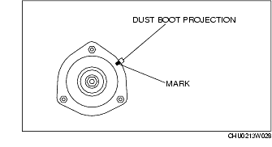

Workshop Manual ➭ SUSPENSION ➭ FRONT SUSPENSION ➭ FRONT SHOCK ABSORBER AND COIL SPRING REMOVAL/INSTALLATION
FRONT SHOCK ABSORBER AND COIL SPRING REMOVAL/INSTALLATION
id021300801400
{: #wp1059778}
Caution
• Performing the following procedures without first removing the ABS wheel-speed sensor may possibly cause an open circuit in the wiring harness if it is pulled by mistake. Before performing the following procedures, remove the ABS wheel-speed sensor (axle side) and fix it to an appropriate place where the sensor will not be pulled while servicing the vehicle.
-
Remove the front suspension tower bar. (See FRONT SUSPENSION TOWER BAR REMOVAL/INSTALLATION.)
-
Remove in the order indicated in the table.
-
Install in the reverse order of removal.
-
Inspect the front wheel alignment, and adjust it if necessary. (See FRONT WHEEL ALIGNMENT.)
|
Brake hose bracket {: #wp1059885} |
|
|---|---|
|
2 {: #wp1059923} |
Front upper arm ball joint {: #wp1059926} (See Front Upper Arm Ball Joint Removal Note.) {: #wp1059959} |
|
3 {: #wp1059930} |
Front shock absorber, coil spring and front upper arm {: #wp1059933} |
|
4 {: #wp1059981} |
Front shock absorber and coil spring {: #wp1059984} |
|
5 {: #wp1060000} |
Piston rod nut {: #wp1060003} (See Piston Rod Nut Removal Note.) {: #wp1060021} |
|
6 {: #wp1060033} |
Retainer {: #wp1060036} |
|
7 {: #wp1060054} |
Bushing {: #wp1060057} |
|
8 {: #wp1060075} |
Upper spring seat {: #wp1060078} (See Upper Spring Seat Installation Note.) {: #wp1060098} |
|
9 {: #wp1060110} |
Dust boot {: #wp1060113} |
|
10 {: #wp1060133} |
Spacer {: #wp1060136} |
|
11 {: #wp1060156} |
Bushing {: #wp1060159} |
|
12 {: #wp1060179} |
Stopper casing and bound stopper {: #wp1060182} |
|
13 {: #wp1060202} |
Stopper casing {: #wp1060205} |
|
14 {: #wp1060225} |
Bound stopper {: #wp1060228} |
|
15 {: #wp1060248} |
Coil spring {: #wp1060251} (See Coil Spring Installation Note.) {: #wp1060273} |
|
16 {: #wp1060285} |
Front shock absorber {: #wp1060288} |
Piston Rod Nut Removal Note
Warning
• Before removing the piston rod nut, secure the shock absorber and spring in the SSTs. Otherwise, the shock absorber and spring could fly off under tremendous pressure and cause serious injury or death, or damage to vehicle parts.
-
Protect the coil spring from scratches using a piece of cloth and install the SSTs.
-
Compress the coil spring using the SSTs and remove the piston rod nut.{: #wp1060375}

Coil Spring Installation Note
-
Protect the coil spring from scratches using a piece of cloth and install the SSTs.
-
Compress the coil spring using the SSTs.{: #wp1060440}
- Install the shock absorber so that the lower end of the coil spring is seated on the step of the lower spring seat.
Upper Spring Seat Installation Note
- Align the mark on the upper spring seat with the dust boot projection.{: #wp1060496}

- Install the upper spring seat so that the upper spring seat stud is at a 27°-33° angle to the shock absorber installation shaft (lower side).{: #wp1060523}